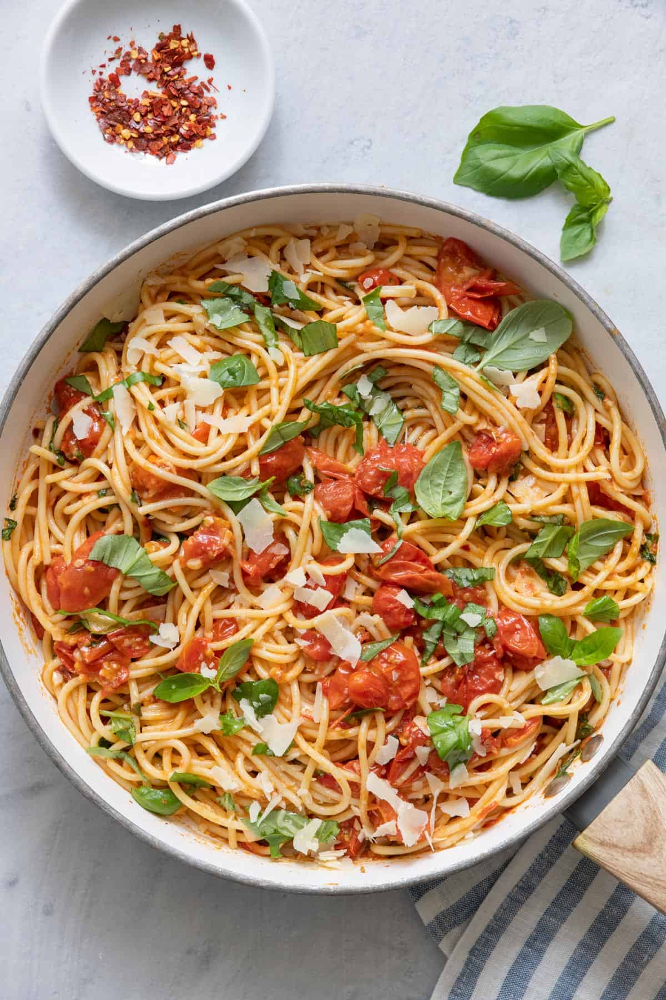

Jude's Pasta Night

Description
This is a super simple, but yummy pasta dish that can be made with ingridents from the Georgia Tech Dining Hall. This is a great refresh from the grease of North Avenue.
Ingredients
- Spagetti
- Cherry Tomatos
- Parmasean
- Olive Oil
- Spinach
Steps
- Begin by boiling pasta for suggested time on package
- Next stew tomatos, in olive oil, till thick and creamy
- Add spinach to sauce pan
- Once pasta is done, drain water, and add paramsean and stir
- Add pasta to plate, and top with sauce, and more parmasean